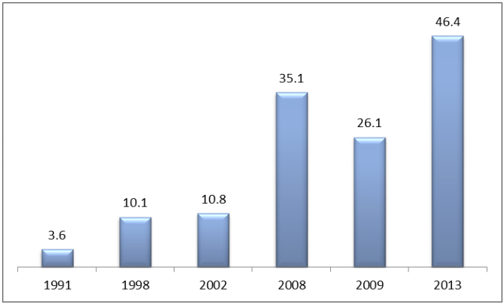
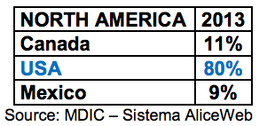

As trade deficit statistics indicate, Brazil is by no means self- sufficient in the chemical sector. Imports have been increasing significantly as follows (in US$ billions):

As of May 2014, Brazil has already imported US$17.4 billion of products and raw materials for the year, adding to the projected deficit of US$33.5 billion.
Brazil imported a total of US$ 12.5 billion from North American suppliers in 2013, 80% (US$ 10 billion) of which came from U.S. companies:

While an excellent market for U.S. chemical products, Brazil’s chemical sector mounts several challenges to importers, including:
Product registration: Several chemical products, including raw materials, must be registered with governmental agencies, such as the Brazilian Federal Police and the Brazilian Army; and may also require registration with municipal, state and federal agencies.
Import taxes and duties: Brazil’s costly and complex cascading tax system and import duties can be challenging for some U.S. chemical companies. However, Brazilian chemical importers and customers trust in the quality of U.S. chemicals and, in some cases, may opt to pay more for U.S. products. Suppliers in Germany, France and UK are strongest competitors for United States exporters.
Competition from Mercosul: Since Brazil is part of Mercosul, its fellow member countries Argentina, Paraguay and Uruguay can export to Brazil with lower or no taxes.
Mercosur International Agreements: Chemical suppliers within Mercosur member countries benefit from several unilateral and regional international agreements. Brazilian suppliers, meanwhile, reap similar benefits through the country’s unilateral trade agreements with five Latin American countries.